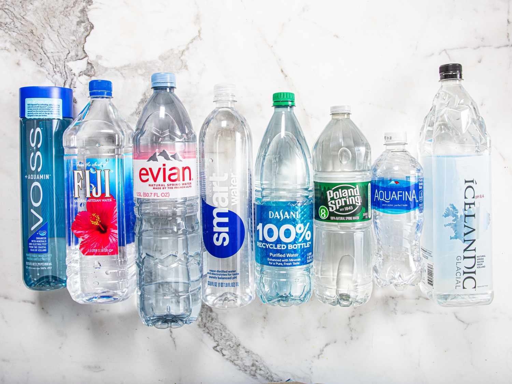

In this project, I analyze the packaged water market using Tableau to uncover key trends, consumer preferences, and industry dynamics. By leveraging interactive dashboards, I explore factors such as regional demand, price fluctuations, brand market share, and sales performance over time. The analysis provides insights into emerging market opportunities, competitive positioning, and the impact of environmental and regulatory factors on the industry. This project demonstrates my ability to translate complex market data into actionable intelligence, helping businesses make informed strategic decisions.

This project analyzes trends among Nobel Prize winners using Excel, focusing on key factors such as award categories, country representation, gender distribution, and historical trends. By leveraging Excel functions, pivot tables, and data visualizations, I uncover patterns in laureate demographics, the evolution of scientific and cultural contributions, and shifts in global recognition over time. This analysis provides valuable insights into the diversity and impact of Nobel Prize recipients across different fields.
This project explores the intersection of audio and visual art by creating a real-time sound visualization using p5.js. By analyzing audio input, I transform sound frequencies into dynamic visual representations, allowing users to experience sound in a completely new way. The project leverages p5.js' capabilities to manipulate visual elements in response to sound waves, creating an interactive and immersive experience that bridges the gap between auditory and visual stimuli. This project demonstrates my ability to combine creative coding with data processing for real-time interactive applications.
This project analyzes Walmart's sales performance using SQL to uncover trends in revenue, product demand, and regional sales distribution. By querying large datasets, I examine factors such as seasonal fluctuations, top-selling products, and customer purchasing patterns. The analysis provides insights into inventory management, pricing strategies, and market trends, helping optimize business decisions. This project demonstrates my ability to extract, clean, and analyze retail data to drive data-driven strategies for improving sales and operational efficiency.
This project examines the progress of Women and Minority Owned Business Enterprises (WMBE) using Tableau to track procurement trends, spending distribution, and contract participation rates. Through interactive dashboards, I analyze year over year changes, identify gaps in equity, and highlight areas for improvement in supplier diversity initiatives. By visualizing key performance indicators, this analysis provides stakeholders with actionable insights to enhance WMBE engagement and drive more inclusive procurement practices.
This project explores key trends in the Airbnb market, analyzing pricing strategies, occupancy rates, and guest preferences across different locations. Using Tableau, I visualize factors such as seasonal demand fluctuations, host performance, and the impact of property types on revenue. The analysis helps uncover insights into competitive positioning, optimal pricing strategies, and emerging travel trends, providing valuable data-driven recommendations for hosts, investors, and policymakers.
This project examines global greenhouse gas emissions, identifying key contributors, trends over time, and the impact of various sectors on climate change. Using Tableau, I visualize emission patterns by country, industry, and energy source, highlighting areas with the highest environmental impact. The analysis provides insights into policy effectiveness, renewable energy adoption, and opportunities for emission reduction. By transforming complex environmental data into an interactive and accessible format, this project supports data-driven decision-making for sustainability initiatives.